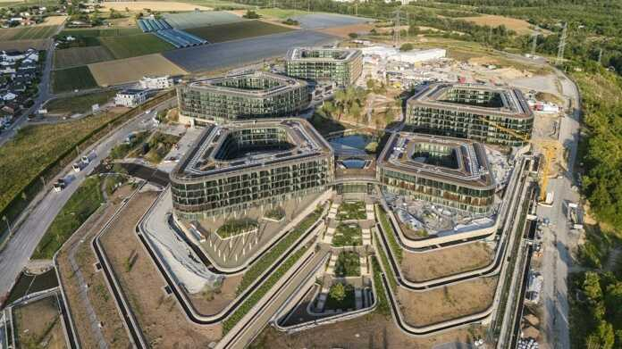

Photo © Franco Casaccia / JSWDVisualisation © Bloomimages / JSWD
01
Schwarz
Digits Campus
Un projet stratégique majeur et un défi de structuration. Gestion des maquettes architecturales avec une division en 16 modèles distincts, Coordination avec les bureaux d’études partenaires internationaux (structure, fluides et paysage), assistance aux équipes, correction des livrables et gestion des exports et dépôts sur ThinkProjekt.